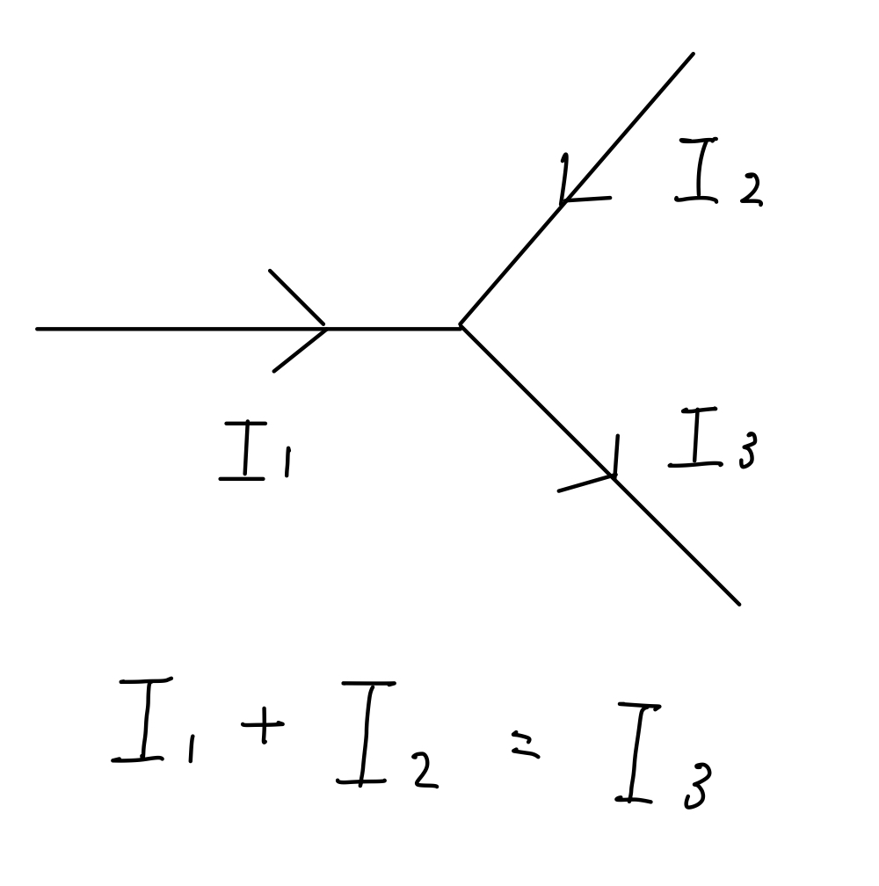
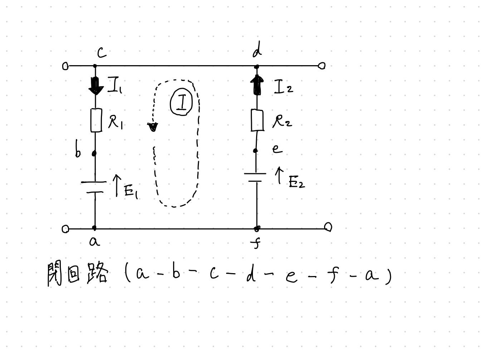

②キルヒホフの法則
キルヒホフの法則とは複雑な回路網の電圧、電流の計算を簡単にするため、オームの法則を発展させたものである。
キルヒホフの第1法則
キルヒホフの第1法則とは回路の任意の接続点において、流れ込む電流の和と流れ出る電流の和が等しい事を利用して未知の電流を求めることが出来る法則である。

キルヒホフの第2法則
キルヒホフの第2法則とは回路網中の任意の閉回路を一巡するとき、回路各部分の起電力の総和と電圧降下の和は等しいことを利用して未知の電圧を求めることが出来る法則である。 下記の図の破線と同じ向きの時は+、逆向きの時は-として計算する。

起電力の総和=(+E1)+(-E2)
電圧降下の総=(+R1I1)+(-R2I2)
(+E1)+(-E2)=(+R1I1)+(-R2I2)